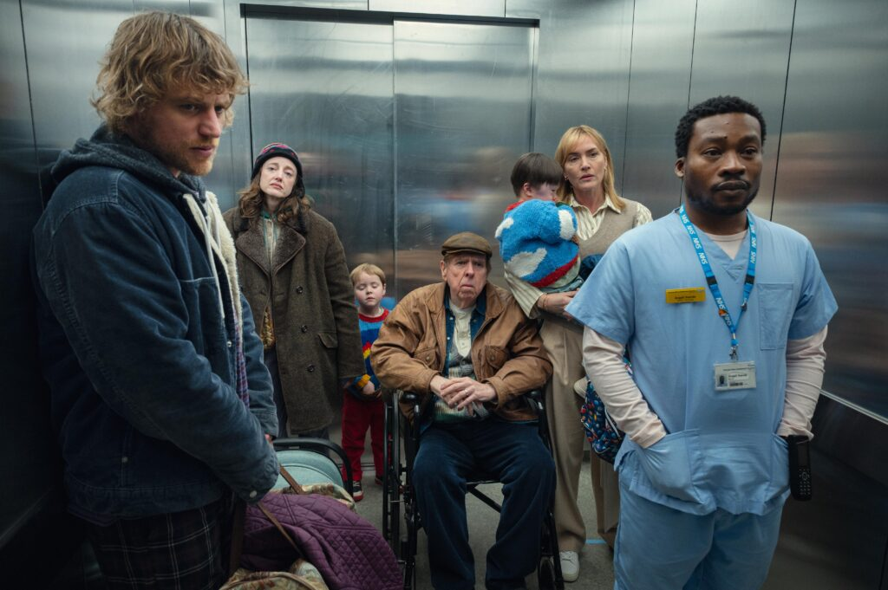

Kate Winslet, Netflix’te yayına giren Elveda June’la ilk kez yönetmen koltuğuna oturuyor. Oğlu Joe Anders tarafından yazılan senaryo, hastanede son günlerini yaşayan annelerini rahat ettirmeye çalışan dört kardeşin çalkantılı ilişkisini konu alıyor. Kate Winslet’la neden tam da şimdi yönetmenliğe soyunduğunu ve bunca yıldır sektöre karşı verdiği mücadeleyi konuştuk.
Bir oyuncu olarak; sadece rolünüze değil bir bütün olarak filme de katkıda bulunabildiğiniz, içinizdeki yönetmeni besleyen setlerde bulundunuz mu? Öğrendikleriniz, yönetmenlik deneyiminizi ne yönde etkiledi?
Evet. Sette en iyi ilişki kurduğum yönetmenler, işbirliği yapmaya daha açık, daha nazik, daha samimi olanlar ve ekiplerini daha çok takdir edenlerdi. En mutlu olduğum setler bu setlerdi. Bu yüzden bu işe girişirken bir numaralı önceliğim, yalnızca olağanüstü bir oyuncu kadrosu oluşturmak değil aynı zamanda iyi niyetli, nazik, istekli ve cömert ruhlu insanlardan oluşan bir teknik ekip kurmaktı. Böyle bir filmde buna özellikle ihtiyacımız vardı. Hem kamera önündeki hem de kamera arkasındaki herkesin başından zaten böyle bir hikâye geçmişti. Herkesin kendine göre bir gerçeği vardı. Dramatik sahneleri çekerken ekibin duyarlılığı en önemli kurtarıcım oldu. Kameraları yerleştirdikten sonra, bazen herkesin odadan çıkmasını istediğim oluyordu. Oyuncular sahneyi kendi kendilerine keşfetsinler istiyordum. Tabii ki her zaman değil, ama özellikle iki kişilik sahnelerde oyunculara o alanı açmaya çalıştım. Buna uyum sağlayan bir ekiple çalışmak bulunmaz bir şey. Helen Mirren ve Timothy Spall gibi oyuncular zaten her şeyi görmüş, geçirmiş. Kaç yıldır bu işi yapıyorlar… Az çok benim için de geçerli aslında. Bu deneyimli oyuncuları yönetirken, performanslarıyla ilgili onlara verebileceğiniz çok parlak ya da çok ilginç bir fikir bulamazsınız. Ama bazı yönetmenler mutlaka bunu yapmaya, bunu yaparken sizi manipüle etmeye çalışır.
Hemen kokusunu alıyorsunuz, değil mi?
Evet. Kokusu burnunuza gelir. “Yeni numaralar denemek zorunda değiliz” dersiniz içinizden. İçinize bir şüphe düşer. Benim böyle şeyler denememe gerek yoktu. İkisi de işini gayet iyi biliyordu. Olsa olsa onlar bana bir şeyler öğretir, ben onlara öğretemem.
Hollywood’da yaşçılığın kadın oyuncuların kariyerleri üzerindeki etkisi ve kadın temsilleri konusunda bolca kafa patlatan biriyim. Kariyeriniz boyunca sizi hayranlıkla takip ederken, perdede temsil etmeyi seçtiğiniz kadınlar konusunda çok bilinçli davrandığınızı düşündüm hep. Dev yapımlarda bile karakterleriniz hep çok sahici. Yaşayan bir tarafları var. Bir kadın oyuncu olarak bu savaşı nasıl kazandınız?
Kadınların yaşlandıkça daha canlı, daha güçlü, daha ilginç ve daha dinamik hâle geldiğini düşünüyorum. 50 yaşında kendimi hiç olmadığım kadar canlı hissediyorum. 60 yaşında kim bilir nasıl hissedeceğim? Hayal dahi edemiyorum. Ya da 80 yaşında. Helen Mirren’a baksanıza! Güzelliğinin ve gücünün doruğunda. En sansürsüz hâliyle karşımızda. Belli bir yaşın üzerindeki aktrisleri dışlama kültürü yavaş yavaş değişiyor bence. Çünkü benim yaş grubumda veya benden daha yaşlı birçok aktris artık televizyonda ve sinemada başrollerde oynayabiliyor. Ben gençken, hiç böyle değildi. Kadınlar için doğru düzgün rol yoktu. Senaryolar erkek karakterler etrafında şekilleniyordu. Bu filmi yönetmek istememin sebeplerinden biri de bu. Hayatımın büyük kısmını başka kadınların hakkını savunarak, onları yukarı taşımaya çalışarak geçirdim ve şunu fark ettiğim noktaya geldim: “Bu değişimin bir parçası olmazsam, hiçbir şeyi değiştiremem.” En çok da bu yüzden yönetmenlik yapmak istedim. Kadınlar tarafından anlatılan kadın merkezli hikâyelerin artması son derece önemli. Sette de aynı şey geçerli. Bizim setimizde kadın-erkek oranı eşitti, ama ara sıra etrafa baktığımda daha çok kadın var gibi geliyordu bana.
Bu yıl sizinle birlikte başka oyuncuların da yönetmenliğe geçişine tanık olduk. Scarlett Johansson, Harris Dickinson, Kristen Stewart… Oyuncu-yönetmenlerin karakterlere dair daha isabetli içgörüleri oluyor. Seyirciye de geçen bir şey bu. Şunu merak ediyorum, sizce oyuncu olmasaydınız nasıl bir yönetmen olurdunuz?
Bence bir yönetmenin en önemli işi, fikri olan herkesin fikrini dinlemek ve kapsayıcı olmak. Benim setimde bazen sahnenin nasıl başlayacağını çocuklar belirledi. Filmde çocukların oyunuyla başlayan bir sahne var, onlar kameraların çalıştığını bilmeden kendi aralarında oynarken ben çoktan çekime başlamıştım. Çok sahici ve sihirli bir şey yarattılar. Ben de sahnenin öyle başlaması gerektiğine karar verdim. Yetişkin oyuncular orada çok dramatik bir sahnenin içindeyken, çocukların hiçbir şeyden haberi olmuyordu. Sadece filmde değil, gerçekte de. Hayatta da böyle olur ya. İşte bu yüzden oyuncu olmasaydım nasıl bir yönetmen olurdum, hiç bilmiyorum. Bunu hayal etmek benim için neredeyse imkânsız. 33 yıllık oyunculuk deneyimimin yönetmen olarak bana çok derin bir içgörü kazandırdığını düşünüyorum. Sadece oyuncuların neye ihtiyaç duyduklarına dair değil, neye ihtiyaç duymadıklarına dair de. Bu ikisi arasındaki farkı sadece oyuncu yönüm bilebilir. O yüzden oyuncu olmasaydım bu yönüm eksik olacaktı herhâlde.
